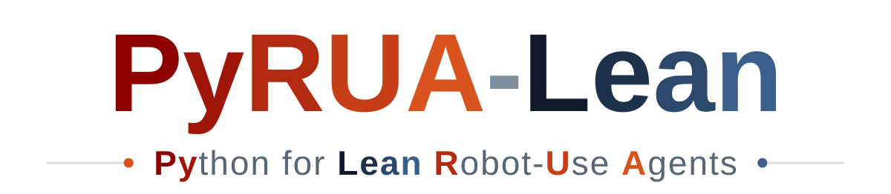

Fewer Tokens, Better Action:
GPT-6 Astra Robot Agents with 14% Higher Success Rate but 65% Fewer Tokens


Abstract
Vision-language model (VLM) agents can control robots through visual feedback and action primitives, but repeated LLM calls and redundant observations incur substantial token overhead. We introduce PyRUA-Lean, an interactive code-execution framework in which the agent composes robot primitives, including vision-language-action (VLA) policies, into Python cells that check and retry locally and return only the images and state they request. Across 700 simulated task instances from LIBERO-PRO, RoboTwin 2.0, and RoboCasa365, it raises success from 63.1% to 71.7% over tool calling with the same GPT-6 Astra planner and primitives, using 49% fewer LLM calls and 65% fewer input tokens on jointly solved instances. On RoboDojo, without any VLA policy or privileged information, it reaches 51.6% average success rate (Score 58.2), 19.4 points above the top entry of the public leaderboard. Based on the PyRUA-Lean framework, we train PyRUA-Lean Coder v0.1-4B, an open 4B model, with GRPO on 45 LIBERO-PRO instances; it improves from 18.8% to 44.1% on unseen task instances, surpassing the Qwen3.5-27B base model.
Results
Figure 1 of the paper, drawn in the page: hover any point or bar for its numbers
Framework
Fewer tokens, better action: one Python cell does what took a tool-calling agent several LLM calls
A tool-calling agent pays a full LLM call for every small step, and every call reads the growing
conversation again, camera images included. PyRUA-Lean (Python for Lean Robot-Use Agents)
keeps the model, the robot primitives and the VLA policies, and changes only how the agent acts: it gets one
tool, python(code), and a robot object robo whose methods are those primitives. In
one LLM call it writes a cell that chains several steps, checks each result, retries when a policy
falls short, and returns only what it printed and the images it asked for.
Success rate
Input tokens
LLM calls
Cost
700 simulated task instances from LIBERO-PRO, RoboTwin 2.0 and RoboCasa365; tokens, calls and cost on the instances both agents solved.
Calls, tokens and cost per solved episode
One task, two agents
One LIBERO-PRO task instance, run once with each agent: “Pick the akita black bowl on the stove and place it on the plate”. Step through it one LLM call at a time: each square is one call, a filled square brought camera images back, and the outlined square solved the task.
One cell instead of four LLM calls
This is one cell of that episode, exactly as GPT-6 Astra wrote it while placing the bowl on the plate. Tool
calling needed four LLM calls for the same step: two to locate the bowl and sample its base, one to lower
it and one to release it, and each move returned three camera images. The cell measures the bowl's bottom
in the point cloud, lowers it to the right height, releases it only if the move arrived, and asks for an
image only if the task is still not done. The three comment lines are ours; plate was found
by an earlier cell.
# compose: compute a placement target from the scene geometry
held_at_plate = robo.segment(point=(314, 795))
print('bowl above plate', held_at_plate)
assert held_at_plate.found
correction = np.array(plate.world_xyz[:2]) - np.array(held_at_plate.world_xyz[:2])
place_xy = np.array(robo.state().eef_pos[:2]) + correction
surface_map = robo.world_map()
bowl_patch = surface_map[290:365, 740:850]
bowl_heights = bowl_patch[:,:,2]
bowl_heights = bowl_heights[(bowl_heights>1.04) & (bowl_heights<1.17)]
bottom_z = float(np.quantile(bowl_heights, 0.02))
placement_z = plate.world_xyz[2] + robo.state().eef_pos[2] - bottom_z + 0.007
print('correction', correction, 'bottom', bottom_z, 'placement z', placement_z)
assert np.linalg.norm(correction)<0.07 and 0.95<placement_z<1.05
# compose: lower, check, and release within the cell
lower = robo.move_to([*place_xy, placement_z], gripper=+1, step_clip=0.012, tol=0.005, max_steps=100)
print('lower', lower)
if lower.reached and not robo.done:
print('release', robo.release())
print('done', robo.done)
# select: ask for an image only if the task is unfinished
if not robo.done:
robo.show('agentview')It printed five lines and asked for no image: the bowl was on the plate and the task was done.
SOTA on RoboDojo
First on all five capability dimensions, with no VLA policy and no privileged information
On RoboDojo, PyRUA-Lean reads only the colour images of the benchmark's default observation and acts through this library's own motion, gripper and perception primitives: no VLA policy and no privileged information. Evaluated with RoboDojo's own client through XPolicyLab, on all 42 tasks (2,100 episodes), it reaches a 51.62% average success rate (Score 58.20), 19.4 points above the top entry of the public leaderboard, and is first on all five capability dimensions (a snapshot of the board taken on October 9, 2026).
The full leaderboard
Model
PyRUA-Lean Coder v0.1-4B: an open 4B model trained to write the cells, ahead of Qwen3.5-27B on tasks it never saw
PyRUA-Lean Coder v0.1-4B is Qwen3.5-4B trained with GRPO in the PyRUA-Lean framework, on 45 LIBERO-PRO task instances. On 655 task instances it never saw in training, the other LIBERO-PRO tasks and three benchmarks it was not trained on at all, its success rate rises from 18.8% to 44.1%, above the Qwen3.5-27B base model (29.2%). The weights are on Hugging Face.
| Planner | Trained on | Not seen in training | All (700) | ||||
|---|---|---|---|---|---|---|---|
| LIBERO-PRO 45 instances | LIBERO-PRO other tasks (155) | RoboTwin 2.0 (250) | RC365 atomic (90) | RC365 composite (160) | All unseen (655) | ||
| Qwen3.5-4B | 37.8 | 13.5 | 14.0 | 52.2 | 12.5 | 18.8 | 20.0 |
| Qwen3.5-27B | 64.4 | 38.1 | 20.8 | 65.6 | 13.1 | 29.2 | 31.4 |
| PyRUA-Lean Coder v0.1-4B | 71.1 | 37.4 | 52.4 | 76.7 | 19.4 | 44.1 | 45.9 |
| GPT-6 Astra (reference) | 100.0 | 92.3 | 69.2 | 86.7 | 39.4 | 69.8 | 71.7 |
Success rate (%) of Qwen3.5-4B before and after training (PyRUA-Lean Coder v0.1-4B), and of Qwen3.5-27B, on the 700 task instances of the comparison with tool calling, one episode per instance. Training used 45 LIBERO-PRO instances only. Last row: GPT-6 Astra with PyRUA-Lean, with its LIBERO-PRO result split in the same way, run in a different agent loop, for reference. Bold: the highest value of a column among the first three rows. RC365: RoboCasa365.
BibTeX
@article{si2026fewer,
title={Fewer tokens, better action: GPT-6 Astra robot agents with 14\% higher success rate but 65\% fewer tokens},
author={Si, Ruiyang and Bi, Jianxin and Yang, Shunyu and Ni, Rui and Huang, Wenbo and Wang, Qiang and Jiang, Shulong and Zhang, Yintianrun and Ruan, Feixiang and Zhang, Kewei and Wang, Duomin and Li, Xiuyu and Feng, Haiwen and Dong, Zhen and Zhou, Daquan},
journal={arXiv preprint arXiv:2610.01939},
year={2026}
}